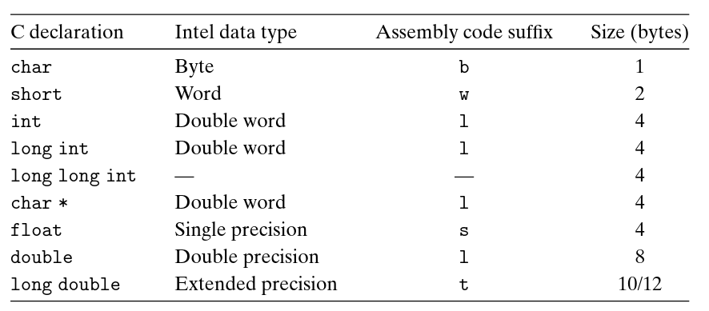

Due to its origin as a 16-bit architecture that expanded to a 32-bit one, Intel uses the term "word" to refer to a 16-bit data type. Based on this, they refer to 32-bit quantities as "double words", and 64-bit quantities as "quad words".
A single piece of data can span multiple consecutive bytes in memory. For example, a double occupies 8 bytes. On a 32-bit architecture, the CPU may not be able to load or operate on all 8 bytes in a single instruction, because general-purpose registers are only 32 bits (4 bytes) wide. In such cases, the CPU may process the data in parts, or use special instructions or registers designed to handle larger data types.
b, w, l, and q suffixes in
assembly instructions like movb, movw, etc.